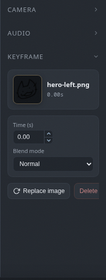

Blend modes
16 blend modes per keyframe, from multiply to luminosity.
Per keyframe blending
Each keyframe can blend with the layers below it in 16 different ways. Set the mode in the selection panel with a keyframe selected. When in doubt, try them all; that is what undo is for.
| Group | Modes |
|---|---|
| Normal | normal |
| Darken | multiply, darken, color burn |
| Lighten | screen, lighten, color dodge |
| Contrast | overlay, hard light, soft light |
| Invert | difference, exclusion |
| Color | hue, saturation, color, luminosity |
